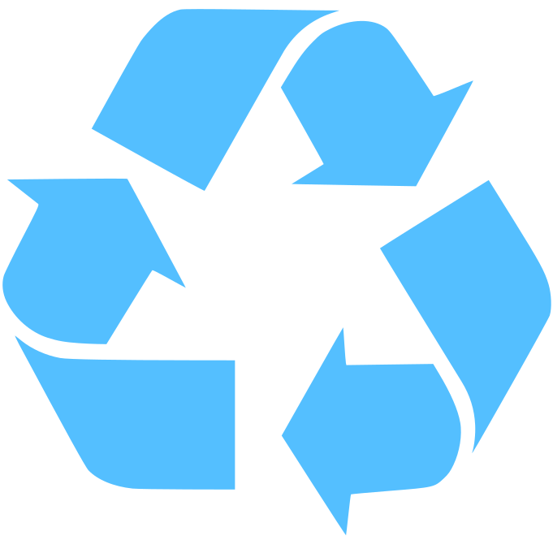
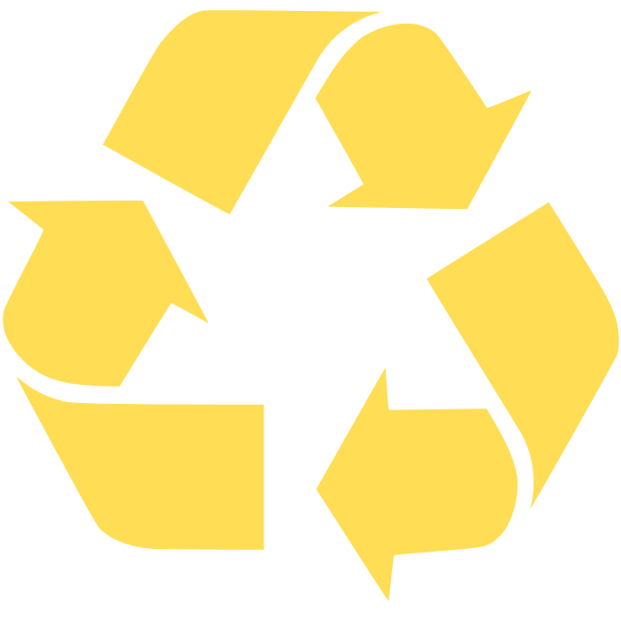
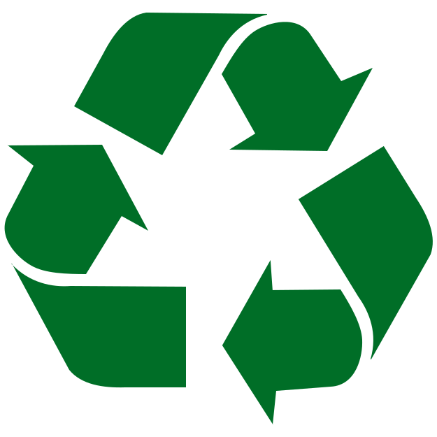

A Importância da Separação do Lixo
Publicado em 00/00/2018
por Camila Garcia
A separação indevida do lixo pode gerar muitos problemas para o meio ambiente, assim como a sua deposição em lugares inadequados. Como alguns exemplos podes citar:
- Contaminação do solo, ar e água;
- Proliferação de vetores transmissores de doenças;
- Entupimento de redes de drenagem urbana;
- Enchentes;
- Degradação do ambiente;
- Depreciação imobiliária;
entre outras coisas.
Com a separação do lixo é possível:
- Reciclar;
- Reutilizar;
- Agregar melhor valor ao material a ser reciclado;
- Causar menor impacto ambiental quando da disposição final dos rejeitos;
- Proporcionar melhores condições de trabalho aos catadores ou classificadores dos materiais recicláveis;
- Realizar compostagem;
- Exigir menor demanda da natureza;
- Aumentar o tempo de vida dos aterros sanitários.


Papel
Todos os tipos são recicláveis, inclusive caixas do tipo longa-vida e de papelão, papel laminado, nota fiscal, envelope, jornais e revistas. Não recicle papel com material orgânico, como caixas de pizza cheias de gordura, pontas de cigarro, fitas adesivas, fotografias, papéis sanitários e papel-carbono.

 Plástico
Plástico
90% do lixo produzido no mundo são à base de plástico. Por isso, esse material merece uma atenção especial. Recicle sacos de supermercados, garrafas de refrigerante (pet), tampinhas e até brinquedos quebrados.


Metal
Além de todos os tipos de latas de alumínio, é possível reciclar tampinhas, pregos e parafusos. Atenção: clipes, grampos, canos e esponjas de aço devem ficar de fora.


Vidro
Quando limpos e secos, todos são recicláveis, exceto lâmpadas, cristais, espelhos, vidros de automóveis ou temperados, cerâmica e porcelana.
http://www.mma.gov.br/informma/item/8521-como-e-porquê-separar-o-lixo>
http://www.teraambiental.com.br/blog-da-tera-ambiental/separacao-do-lixo-8-coisas-que-voce-provavelmente-nao-sabe
chart.js